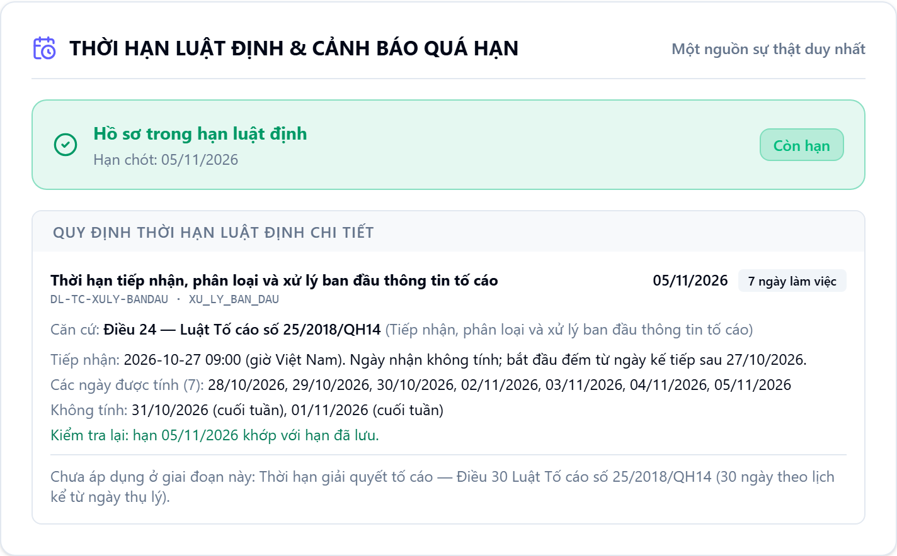

Đúng luồng - Vững luật - Thấu tình
Đơn thư đi đúng nơi, đúng hạn, đúng luật.
Pháp Dẫn (LegalFlow) được thiết kế để giúp UBND xã, phường phân luồng đơn khiếu nại, tố cáo, theo dõi từng hạn luật định, và đối chiếu mọi căn cứ AI gợi ý với kho văn bản trước khi cán bộ dùng. Dự án đang thử nghiệm với dữ liệu mẫu.


- 27/10Ngày nhận, không tính
- 28/10Ngày 1
- 29/10Ngày 2
- 30/10Ngày 3
- 31/10Cuối tuần, không tính
- 01/11Cuối tuần, không tính
- 02/11Ngày 4
- 03/11Ngày 5
- 04/11Ngày 6
- 05/11Ngày 7, hạn
- Căn cứ
- Điều 24 Luật Tố cáo số 25/2018/QH14Tiếp nhận, phân loại và xử lý ban đầu trong 07 ngày làm việc.
- Hạn
- 05/11/2026. Hệ thống tính lại và đối chiếu khớp với hạn đã lưu.
Đơn thư trễ hạn thường không vì thiếu luật, mà vì hạn không hiện ra trước mắt người xử lý.
Pháp Dẫn được thiết kế để đặt hạn, người chịu trách nhiệm và căn cứ của mỗi hồ sơ lên cùng một màn hình, để lãnh đạo và cán bộ cùng nhìn thấy một bức tranh.
Hành trình của một lá đơn, nhìn thấy từng ngày
Trong thiết kế của Pháp Dẫn, mỗi chặng có người giữ hồ sơ và một hạn rõ ràng. Trạng thái mỗi chặng ghi bằng chữ; màu chỉ để nhìn nhanh.
-
Chặng 1
Tiếp nhận
Cán bộ tiếp dân ghi đơn, cấp mã hồ sơ.
Đã xong, đúng hạn -
Chặng 2
Phân loại, phân luồng
Xác định loại đơn và người chịu trách nhiệm.
Đã xong, đúng hạn -
Chặng 3
Thụ lý
Lãnh đạo giao việc, hạn giải quyết bắt đầu chạy.
Đang xử lý Hôm nay: còn 2 ngày đến hạn -
Chặng 4
Xác minh
Chuyên viên làm việc với các bên, thu thập tài liệu.
Chưa đến -
Chặng 5
Kết luận, đóng hồ sơ
Dự thảo qua Khóa trích dẫn, lãnh đạo ký ban hành.
Chưa đến
Sổ giấy và Pháp Dẫn
Cách làm việc giữ nguyên. Thứ thay đổi là những gì cán bộ nhìn thấy mà không phải đi hỏi.
| Việc cần nắm | Khi theo dõi bằng sổ | Thiết kế của Pháp Dẫn |
|---|---|---|
| Hạn của từng đơn | Sổ giấy: Ghi trong sổ, phải lật lại mới nhớ. | Pháp Dẫn: Tính sẵn theo ngày làm việc cho đơn khiếu nại, tố cáo, hiện căn cứ và từng ngày được tính. Loại đơn chưa có quy tắc tính hạn thì hệ thống không tự đặt ngày. |
| Hồ sơ đang ở đâu | Sổ giấy: Hỏi trực tiếp người được giao. | Pháp Dẫn: Ghi người giữ hồ sơ và thời điểm chuyển ở từng chặng. |
| Căn cứ pháp lý | Sổ giấy: Tra tay, dễ dẫn văn bản đã hết hiệu lực. | Pháp Dẫn: Đối chiếu với kho văn bản theo đúng ngày đang xét. |
AI gợi ý. Cán bộ quyết. Căn cứ phải có thật.
Mô hình ngôn ngữ có thể viết ra một điều luật nghe rất đúng mà không hề tồn tại. Trên bản thử nghiệm, Khóa trích dẫn chặn việc đó: mỗi căn cứ được tra trong kho văn bản, theo đúng số điều, đúng văn bản và đúng thời điểm áp dụng.
- Điều 24 Luật Tố cáo 2018Có trong kho
- khoản 2 Điều 30 Luật Tố cáo 2018Có trong kho
- Điều 68 Luật Tố cáo 2018Luật không có điều này
- Điều 328 Bộ luật Dân sự 2015Ngoài phạm vi kho
- Có trong kho
- Khớp cả văn bản lẫn số điều, khoản. Viết có dấu, không dấu hay viết tắt như Luật TC, LTC đều nhận ra.
- Luật không có điều này
- Văn bản có trong kho nhưng số điều, khoản không tồn tại, ví dụ Điều 68 của một luật chỉ có 67 điều.
- Ngoài phạm vi kho
- Văn bản không thuộc kho đang dùng. Hệ thống không đối chiếu được nên không gắn nhãn đã kiểm chứng, kể cả khi văn bản đó có thật hoặc số điều trùng với một luật trong kho.
- Hết hiệu lực
- Văn bản có thật nhưng đã hết hiệu lực vào ngày đang xét. Kho văn bản ghi ngày hiệu lực của từng văn bản, ví dụ Luật Tố cáo 2011 hết hiệu lực khi Luật Tố cáo 2018 có hiệu lực. Nhãn này đang được hoàn thiện để hiện ngay trên màn hình Khóa trích dẫn.
Một lõi, nhiều phân hệ
-
Phân luồng đơn thư
Tiếp nhận, phân loại, giao việc, theo dõi đến khi đóng hồ sơ.
Đang thử nghiệm -
Trợ lý tác nghiệp
Tính hạn luật định, tra căn cứ, Khóa trích dẫn, gợi ý dự thảo.
Đang thử nghiệm -
Học viện Tư duy phản biện
Bài tập tình huống để cán bộ mới luyện cách lập luận và dẫn căn cứ.
Đang thử nghiệm -
Huấn luyện AI từ ca mẫu
AI học từ những ca đã được chuyên gia thẩm định, không học từ hồ sơ thật của người dân.
Lộ trình
Bảo vệ thông tin của người gửi đơn
Pháp Dẫn đang thử nghiệm với hồ sơ mẫu, chưa dùng hồ sơ thật của công dân. Chính sách xử lý dữ liệu của ứng dụng sẽ được công bố trước khi mở dùng thử.
Mỗi đơn vị một không gian riêng
Dữ liệu tách theo đơn vị, quyền xem và sửa theo vai trò của từng cán bộ.
Lọc dữ liệu cá nhân trước khi gửi AI
Email, số điện thoại, số định danh được lọc bỏ. Ẩn họ tên sẽ áp dụng cho toàn bộ luồng AI trước khi bật AI đám mây.
Nhật ký thao tác
Việc tạo, sửa, chuyển và đóng hồ sơ đều được ghi lại: ai làm, lúc nào.
AI đám mây chưa bật
Trong giai đoạn thử nghiệm, hồ sơ mẫu chỉ đọc và không gửi dữ liệu ra ngoài.
Tìm hiểu dự án
Pháp Dẫn đang trong giai đoạn thử nghiệm với dữ liệu mẫu. Cơ quan, tổ chức quan tâm có thể liên hệ để trao đổi.